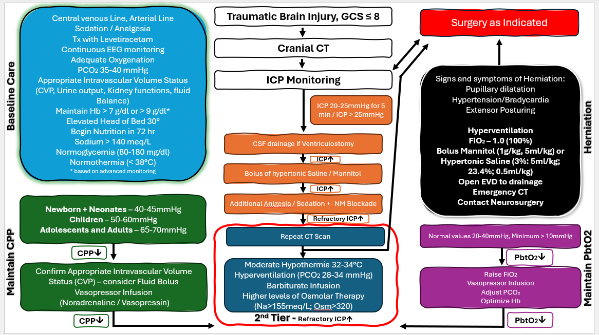

Pediatric Traumatic Brain Injury
תקציר קליני – קבלה, יעדים וטיפול ב־ICP
1
קבלה ויעדים מרכזיים
מטרה: מניעת פגיעה מוחית שניונית תוך שמירה על חמצון, פרפוזיה, נורמותרמיה וניטור נוירולוגי הדוק.
- מנח: ראש ניטרלי, הגבהת ראש ל־30°.
- ניטור: ליין עורקי + מרכזי; כאב, GCS ואישונים פעם במשמרת; NIRS יעד 60–80%; CFM/EEG לפי הצורך.
- סדציה/אנלגזיה: פרופופול + פנטניל; מתחת לגיל 3 שנים לשקול פנטניל + קטמין; בחוסר יציבות המודינמית פנטניל + קטמין/מידזולם. יש לנטר ל־PRIS בשימוש בפרופופול.
- הנשמה: PaO₂ 90–100 mmHg, PaCO₂ 35–40 mmHg, PEEP 5–10 cmH₂O; להימנע ככל האפשר מ־FiO₂ מעל 50%.
- חום: נורמותרמיה, גבול עליון 37.5°C. היפותרמיה טיפולית אינה מומלצת באופן שגרתי.
- נוזלים/מטבולי: כ־75% אחזקה, מאזן ניטרלי, תפוקת שתן ≥ 1 mL/kg/h, גלוקוז 80–180 mg/dL, נתרן > 140 mEq/L; בטיפול היפראוסמולרי ניתן לכוון מעל 150.
- דם/קרישה: Hb מעל 7 g/dL; שקילת יעד גבוה יותר לפי הקשר קליני. אין לתקן קואגולופתיה באופן שגרתי; לפני פרוצדורה פולשנית/בדימום פעיל לפי הצורך.
- פרכוסים: Keppra 40 mg/kg/day מחולק ל־2, מקסימום 2 g/day בשלב ההתחלתי.
- מעבדה: ספירת דם וכימיה כל 6 שעות בתחילה; קרישה כל 12 שעות. הזנה אנטרלית מוקדם ככל הניתן, עד 72 שעות, אם יציב המודינמית.
2
ICP / CPP – עיקרי הטיפול
- בהיעדר ניטור ICP רציף: CT סדרתי לפי חומרת דימום/בצקת ובהתאם להמלצת נוירוכירורגיה.
- יש להתייחס ל־ICP כמוגבר מעל 20 mmHg ולשמור CPP לפי גיל כפי שמפורט במסמך המקור ובאלגוריתם.
- אם יש ventriculostomy: ניקוז CSF.
- טיפול היפראוסמולרי: סליין היפרטוני / Mannitol.
- העמקת אנלגזיה וסדציה ± חסימה נוירומוסקולרית לפי הצורך.
- ב־ICP עמיד: CT חוזר וטיפולי מדרגה שנייה לפי האלגוריתם, כולל ברביטורטים, היפרוונטילציה מבוקרת, טיפול היפראוסמולרי מתקדם ושיקול דקומפרסיה נוירוכירורגית.
- לאחר ICP תקין ויציב למשך 12–24 שעות: גמילה הדרגתית בסדר הפוך להתערבויות.
3
חשד להרניאציה – טיפול חירום
סימנים: הרחבת אישון/אישונים, יתר לחץ דם עם ברדיקרדיה, Extensor posturing.
- Hyperventilation + FiO₂ 1.0.
- Mannitol 1 g/kg (5 mL/kg) או סליין היפרטוני 3% 5 mL/kg.
- פתיחת EVD אם קיים.
- CT דחוף ופנייה מיידית לנוירוכירורגיה.
4
אלגוריתם TBI
האלגוריתם המקורי מרכז את ה־Baseline Care, יעדי CPP, טיפול ב־ICP מוגבר, PbtO₂ והרניאציה.
